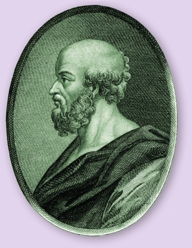
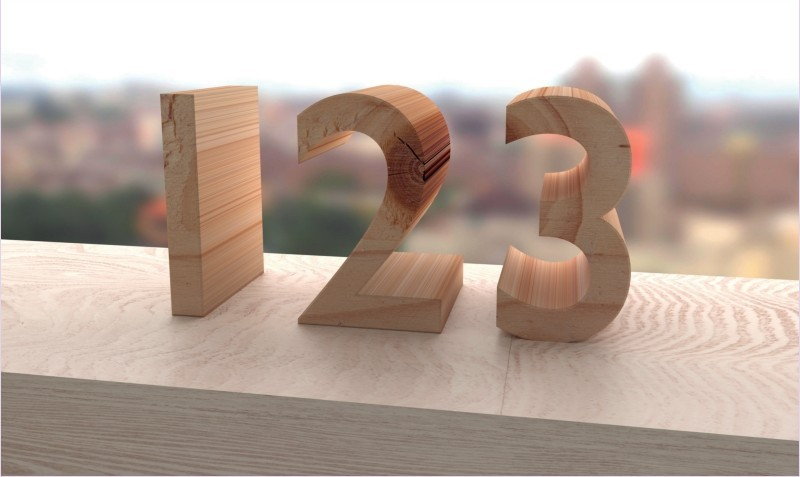
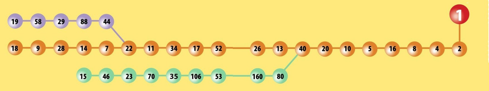
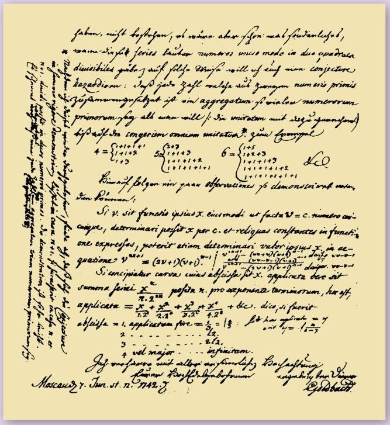
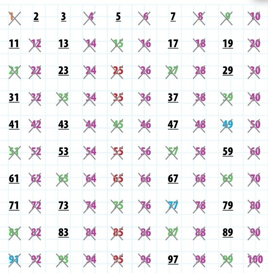

对于我们大多数人而言，数学的全部内涵就是数数、模式刻画，还有建立体系解释万物。然而，素数与此毫不相同。它们神秘莫测，引人入胜，因为它们由来深奥，美妙非常。
素数的定义很简单：它是只能被1和自己整除的数。我们试试看几个数吧。1只能被它自己和1整除，生效了，1是素数。（啊，但是1很特殊，我们稍后再看它到底是不是素数。）继续，2只能被它自己和1整除，所以它是素数。此时我们可以说所有数都能被1整除，我们就只专注于找它的因子吧。3不能被2整除，能被3整除——3是素数。4能被2整除，所以不是素数。所有比2大的偶数都能被2整除，都不是素数。事实上，2是唯一的偶素数。
开端
其他素数包括7，11，13，17，19，…，它们源源不断地出现，甚至我们的祖先也对这些特殊的数表现出兴趣。伊尚戈骨头——20 000年前在狒狒腿骨上刻字的一套计数系统，包括了若干素数，特别是10到20之间的素数。这些对于我们计算大型数字可有帮助？不得而知。但我们知道在文明之花绽放的过程中，人们被素数深深吸引。古埃及人对于以素数为分母的单位分数另眼相看，其缘由亦不知晓。公元前300年，古希腊的欧几里得在涵盖其全部数学知识的巨著《几何原本》（其实同时还有13本小型著作出版）中，对素数的理解有了长足进展。

昔兰尼的埃拉托色尼是最早的素数研究者之一，其具体的研究方法可以参见第62页。
算术
欧几里得的《几何原本》在最近的2300年间屡屡出版印行，从未中断，其他图书难以望其项背。在《几何原本》的诸多数学上的原理和定理之中，包含了算术基本定理。这个定理既提纲挈领，又支持有力，阐述了我们进行的求和与其他计算总是只有唯一答案的原因。这个定理说任何比1大的自然数（见第14页）要么是素数，要么是一系列素数的乘积。构成这个数的一串数称为因子。所有非素数都是由一组素数构成的。例如， 4=2×2，6=2×3，8=2×2×2， 12=2×2×3，15=3×5。思考一下这些计算，你能想象这些数是另外一串素数的乘积吗？不考虑排列顺序的话，永远只能有一组素数因子。每个非素数有唯一的一组素数因子。
素数的种类
在无穷无尽的素数之中，数学家发现许多子集。间隔为2的一对是孪生素数，间隔为2或4的三元组是三联素数，间隔为4的是表亲素数，间隔为6的是姻亲素数。
孪生素数：
(3,5),(5,7),(11,13),(17,19),(29,31),(41,43),
(59,61),(71,73),(101,103),(107,109)
三联素数：
(5,7,11),(7,11,13),(11,13,17),(13,17,19),(17,
19,23),(37,41,43),(41,43,47),(67,71,73),(97,
101,103),(101,103,107),(103,107,109),(107,
109,113),(191,193,197),(193,197,199),(223,
227,229),(227,229,233),(277,281,283),(307,
311,313),(311,313,317),(347,349,353),(457,
461,463),(461,463,467),(613,617,619),(641,
643,647),(821,823,827)
表亲素数：
(3,7),(7,11),(13,17),(19,23),(37,41),(43,47),
(67,71),(79,83),(97,101),(103,107),(109,113),
(127,131),(163,167),(193,197),(223,227),
(229,233),(277,281),(307,311),(313,317),
(349,353),(379,383),(397,401),(439,443),
(457,461),(463,467),(487,491),(499,503),(613,
617),(643,647),(673,677)
姻亲素数：
(5,11),(7,13),(11,17),(13,19),(17,23),(23,29),
(31,37),(37,43),(41,47),(47,53),(53,59),(61,67),
(67,73),(73,79),(83,89),(97,103),(101,107),
(103,109),(107,113),(131,137),(151,157),
(157,163),(167,173),(173,179),(191,197),
(193,199),(223,229),(227,233),(233,239),
(251,257),(257,263),(263,269),(271,277),
(277,283),(307,313),(311,317),(331,337)
数字之元
如上，我们称非素数为合数，因为它们是小素数的聚合。从这个意义上说，素数是数字之元。它们不能拆解成更小的单元，别的数字都是由它们构成的。
素数有无穷个
《几何原本》里面也包含欧几里得定理的一个证明，显示了素数有无穷个。这个有点复杂，但是我们这么说吧：这个证明先假设素数只有有限个，而且已经全部知晓了。欧几里得提出反论，并且说如果你把它们都乘起来，你就知道这里面至少有一个你没列出的素数。把已经列出的这些素数乘起来，乘积为P。欧几里得把P上再加1，得到新数Q。Q是素数吗？如果是的话，你就得到一个原来未列出的素数。如果Q不是素数，就更麻烦啦，那它必然能被某一个素数整除。在得到P的过程中，你已经有了一个所有素数的列表，这里面有谁能整除Q吗？欧几里得说，不可能的！因为这些素数已经是P的因子了。（回顾一下，P就是这些素数相乘得来的，所以它们每一个都能整除P。）一个素数不可能既整除P，又整除Q，因为二者只差1。这意味着合数Q有个素数因子刚才并未列出。于是得到结论：仍然有漏网的素数！素数的名单永远也列不全。
自然界中的素数
美洲蝉为防止掠食者的攻击巧妙地运用了素数。蝉大半生都是幼虫，没有翅膀，栖息地下，啜饮树液。接近成年时，它们得奋力出壳，爬上树木，生出双翅。幼虫的这些动作一气呵成。这一时期也是配对的最佳时机——但它们得先在地下蛰伏13或17年。这两个数是素数，意味着掠食者无法与它们的生命周期同步。假如掠食者在这片地区10年一轮回，就逮不到13年周期的那批蝉。即使它赶上了13年的那批，也赶不上17年的那批。多亏了素数，蝉繁衍至今。
古希腊大数学家欧几里得正在为众人展示他的数学知识。指出素数有无穷多的正是欧几里得——但是我们仍无从得知素数都有哪些。
复杂的概念
公元前3世纪，数学家就知道素数有无穷个。对于那时的许多人来说，这个结论很诡异，因为它不符合自然规律，自然界没有什么是无穷的，数学中的无穷这个想法背离了神的王国（见第152页）。他们怎么知道哪个数是素数，哪个数是合数呢？你有办法检验它们吗？古希腊数学家埃拉托色尼提出一个简单而有效的解决办法，他用筛子从合数中间拣出素数。
数字筛
埃拉托色尼筛子是从一定范围的数字中找素数的方法。首先列出数字，比方1~100。下面开始划掉合数。忽略1，从第一个素数2开始。2以上的偶数都不是素数，所以第一步就是划掉偶数4，6， 8，10，…，你把名单（或者表格）上的这些数都划掉，这样大约一半的数就直接出局了。下一步从3开始，3的偶数倍数（6，12，等等）都已经划掉了，再划掉奇数倍的就好：9，15，21，等等。不用对4再重复这一过程了，它又不是素数。继续下一个素数5，划掉5的奇数倍数25，35，等等。现在已经精疲力竭了吧，坚持住哦。每当对一个数按这一过程处理后，再处理下一个还没被划掉的数。这是由素数的定义决定的，没有比它小的数能整除它。用这种方法几分钟就可以把100以内的数筛完，其中有25个素数。计算机可以用这种方法筛出巨量素数，但即使是超级快的计算机也筛不了无穷个数——那得花无穷长的时间。那么有没有预估素数的办法呢？

前人认为这是头3个素数——但是现在1已经被剔除出素数名单了。
是素数吗？
从欧几里得开始，寻找素数的模式就成了数学家的一个目标。这一工作既艰又深，恒为难题。最终人们达成共识，非得把1从素数中移除才有意义。数字1看来很符合素数的基本原则：只能被1和它自己（还是1）整除。多年以来，1在素数中还有一席之地也是为此。然而，算术基本定理最终把1从素数名单中赶出去了。定理说合数“是唯一的一系列素数的乘积”。“唯一”一词十分严格，因为假若允许1作为素数，那合数就不能做唯一的因子分解了。举例而言，6是2×3。如果有1，你也可以说6是1×2×3。看起来还可以，但是再加些1会如何呢？6是1×1×1×2×3。6里面的1可以持续不断地添进去，那么就不能说这组因子是唯一的了。最简单的修正就是把1移出素数名单。尽管如此，1还是一个非常特殊的数字。
使用素数
我们对素数已经很了解了，可以将它们投入应用。素数在保密领域非常有用。当两台计算机建立安全连接时，它们用一个非常大的数进行加密编码来交换信息。这个数是公开的，但其构成的方式可不公开。这个数是用两个非常大的素数相乘得到的，而这两个素数是保密的。这两个素数是公开的大数仅有的因子，用于信息解码。如果知道这两个素数是什么，解码就会相当容易。但是一般而言，世界上最快的计算机也得花两年时间才能找出这两个素数。需要这么久是因为素数没法预估，计算机必须做大量计算和试错工作。
上网的安全软件使用非常大而难破解的素数来加密。
素数的范围
解码的另一条路是找出素数的规律，发现素数在数列中的位置。你可以看看10以内的素数名单——2、3、5和7，它们在10个数中占了4席，或者说40%。跟100以内的素数名单（如果你没有，就用第67页介绍的埃拉托色尼筛子自己做一个）比比看，其中素数只有25个，就是说它们在100以内的数字中占25%。数字增多了，素数却没那么密集了。对于大数而言，素数出现的频度在减少，这是确信无疑的。因为大数是很容易被小数整除的。1000到10 000之间只有12%的素数，1亿到10亿之间则降至5%。既然欧几里得证明了素数无穷无尽，或许素数之差（称素数间隙）也在增大吧？听起来很有道理，是不？看看开头的4个素数，它们在头10个数里紧密排列，然后素数间隙就越来越大了。下一个素数是多少，数学上有没有办法计算呢？
考拉兹猜想

考拉兹猜想听起来挺简单。从任意数字开始，如果是偶数，就除以2；如果是奇数，就乘以3再加1——这就变成偶数了。然后继续下一步，重复这个过程。洛萨·考拉兹在1937年提出这个猜想，声称无论从什么数字开始，这个过程必将以1为终结。对于有的数字，这个过程长一点，但这个猜想必将成立。然而，对于所有数字，仍然没法证明这一点。
寻找间隙
数学家用超级计算机发现了5000万以上个素数。我们所知的最大的有22 338 618个数码。然而，没人能精确又简捷地推测一个数是不是素数。两个素数之差叫作素数间隙，2和3之间的素数间隙是1。你大概会想，素数增大了，素数间隙也随之增大。有许多例子表明，素数间隙可能多种多样。最大的间隙包含3300万个数。但是，间隙亦毫无规律可言，多长的都有。比如，一个大间隙之后，下一个间隙可能只有2。间隙为2的素数对称为孪生素数。孪生素数包括3与5、71与73，等等，特别大的也有。2007年发现了一对孪生素数，每个数有58 711位！
进展
不少数学家因他们在素数方面的工作而名声大振。1742年，德国数学家克里斯蒂安·哥德巴赫提出一个问题：是否每个偶数都是两个素数之和？400亿亿以内的数都检查过了，这条原则成立，但是无人证明对所有数都成立。19世纪的德国数学家卡尔·弗里德里希·高斯研究指出了如何检查某个特定数值以内的数。1859年，高斯逝世后不久，还有一位德国数学家波恩哈德·黎曼着手于预测素数的前沿工作。他使用了数学上一个非常复杂的泽塔（zeta）函数--一列无穷数字之和。黎曼声言他的系统可以展示全部素数，但是没有人能够加以证明。如果谁能做到，可以获得100万美元的奖金！

1742年，克里斯蒂安·哥德巴赫在致莱昂哈德·欧拉的信中，提出了后来的哥德巴赫猜想：是否每个偶数都是两个素数的和？听上去没错，是吧，但是证明的人至今还没有出现。
完全数
完全数是这样一种合数，它等于所有因子（包括1）之和。举例而言，最简单的完全数是6，它可以被1、2和3整除，其和1+2+3=6。完全数与一种叫梅森素数的素数相关。在第176页可找到更多例子。
6 = 1 + 2 + 3
28 = 1 + 2 + 4 + 7 + 14
496 = 1 + 2 + 4 + 8 + 16 + 31 + 62 + 124 + 248
8128 = 1 + 2 + 4 + 8 + 16 + 32 + 64 + 127 + 254 + 508 + 1016 + 2032 + 4064
原理
这是一张100以内素数的完整的埃拉托色尼筛子。1以及每个能被其他数（不包括1）整除的数都叉掉了，只留下了素数。
2的倍数
3的倍数
5的倍数
7的倍数
素数

参见：
▶取模运算，第142页
▶梅森素数，第176页